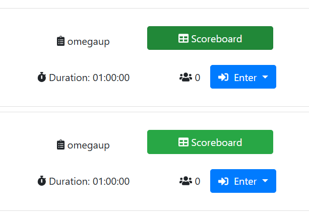
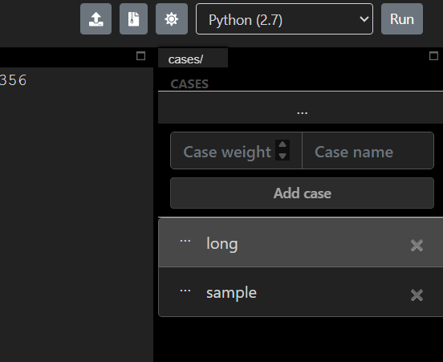
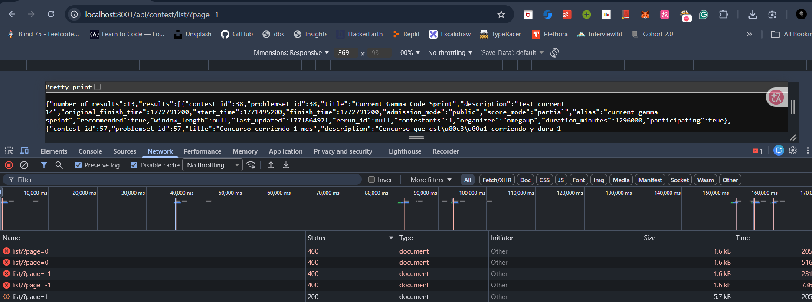
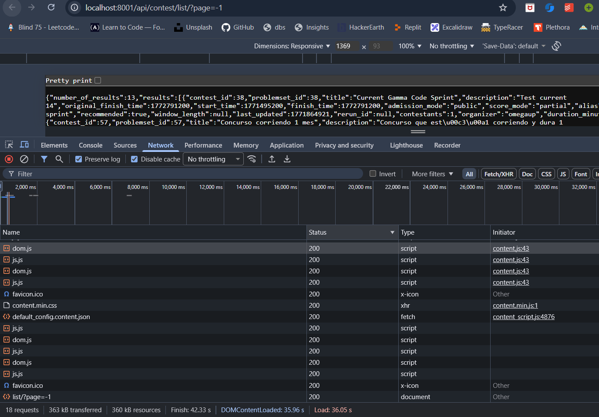
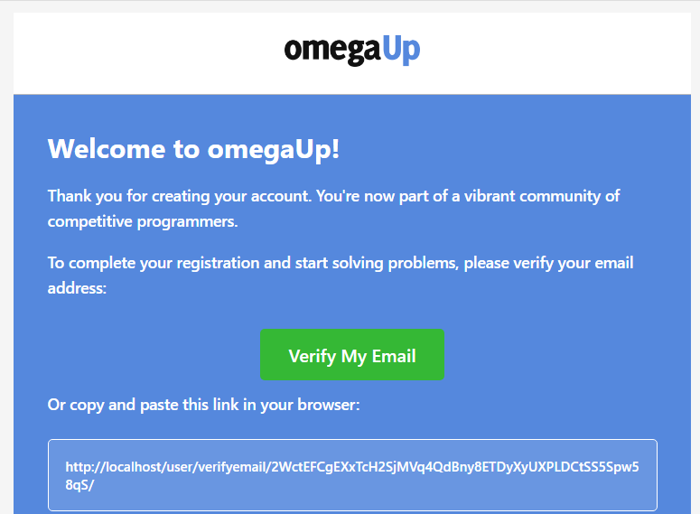

My first pull request to omegaUp was on 31 August 2025. Between then and the first day of the coding period I opened fifty six, of which twenty seven have merged. This page is those nine months, including the part that did not go well.
How it started
I set up the project in late August 2025 and asked for a bug about how contest dates were shown. That became my first pull request. Four days later I opened a second, a small alignment fix, and that one merged first.
My first pull request, and for a long time my oldest open one. The contest list printed raw date strings. Now each tab says what a person would say: "Ends in 3 hours", "Starts in 5 days", or the full date with the month spelled out once it is more than fifteen days away. The exact time stays available as a tooltip.
It took six months to merge, and most of that was my own doing. I stepped away, the branch was deleted, and in January I rebuilt the change on top of current main.
Juan Pablo pointed out that my first version built the sentences in English inside the component, which would work fine if we only displayed information in English
. Every string went into the translation files, and the logic moved into time.ts where the rest of the date code lives.
Juan Pablo later asked for a days format between two and fifteen days, with singular forms, and sent the wording he wanted in English, Spanish and Portuguese along with test contests for the bootstrap data.
The first one to merge, five days after I opened it. The icon and label on the contest card buttons sat at different heights because the text was wrapped in paragraph tags. I removed the wrappers and gave every button the same alignment classes.
Juan Pablo asked for two more things while I was in there: white hover text on the green Scoreboard button, and both buttons the same size.

Hover effects for the navbar, dropdowns that open on hover on desktop, and the profile completion percentage printed inside its progress bar. It went through four rounds of review over six weeks.
My first two attempts used JavaScript listeners, and each one had a state bug: two menus open at once, or a
menu that would not close. The version that merged is CSS only. A :has(.dropdown.show) rule
switches hover off while a menu is clicked open, and an invisible strip under each toggle covers the gap the
pointer has to cross.
Juan Pablo listed what was wrong with the listener approach and asked What do you think about removing this block of code and using a different approach based on a pure CSS?
A draft I opened by mistake from the wrong branch and closed about ninety seconds later. The same work went onto #8599.
Then I disappeared for three months. I came back in December with the navbar change above and from January I was contributing most days.
January and February: being told how things are done here
Eighteen pull requests in the first three and a half weeks of January. Looking back, this was the month I learned the project's rules by breaking them one at a time, and Juan Pablo was patient about it.
Every string goes through the translation files. Logic goes where the codebase already keeps that kind of logic. Prefer a few lines of CSS to a clever script. Test against real data, not an empty page. Split large changes. I was told each of these at least once.
Problem collection pages always showed the filter sidebar. This adds a button that slides it away so the problem table takes the full width.
I had tested the first version against an empty collection, which hid the fact that my button was taking space from the table. Juan Pablo showed me how to fill a local collection, and getting that set up by hand is what later became #8894.
Juan Pablo asked for the labels to go through the translation files, for the button to sit exactly where the sidebar collapses, and for extra points
a sliding animation.
Badges were flat images. This wraps them in a small component that tilts with the pointer, drawn as four stacked layers to fake thickness. No library, and the badge artwork is untouched.
The profile charts showed verdict codes such as AC and TLE in their tooltips. They now show the full translated name.
On the profile page the date of birth moved back a day after saving, for anyone west of UTC. The date was being built from a string with the timezone stripped. It is now built from the UTC parts.
Juan Pablo could not reproduce the report at first, so I recorded it happening.
Six external links still used http. Juan Pablo wondered whether the file that already held the blog links should hold every external link, and I built that before he had answered whether it belonged in this pull request. He approved it and said it could have been its own issue, which was fair.
GitHub sign in
The first thing I built that crossed the whole stack.
omegaUp had Google and Facebook sign in and no GitHub. This adds the whole flow: the OAuth exchange on the server, a state value in a cookie that the callback must match so a forged callback is rejected, matching by primary verified email so an existing account is reused, the button, a setup guide and tests.
It was my first change that touched the backend, the frontend, configuration and documentation together, and the review read like a checklist I now run myself before asking for one.
Juan Pablo asked me to replace Math.random() with crypto.getRandomValues() for the state value, to drop inline styles to keep our CSP effective
, to add an aria-label and then to translate it, and to document the credentials in config.php, which is not versioned and so cannot be committed by accident.
$sessionManager = self::getSessionManagerInstance();
$storedState = $sessionManager->getCookie('github_oauth_state');
if (is_null($storedState) || $storedState !== $state) {
self::$log->error('Invalid GitHub CSRF token');
throw new \OmegaUp\Exceptions\InvalidParameterException(
'loginGitHubInvalidCSRFToken',
'state'
);
}The check that rejects a forged callback. The server sets a random value in a cookie when it renders the login page, GitHub hands the same value back, and if the two differ the login stops.
Fixing data
One university had been entered eighteen times under different spellings. This migration points every reference at the official record and then removes the duplicates.
The review turned a script that would probably have worked into one that could not do damage.
Juan Pablo pointed out that my verification queries at the end did not stop the delete from running, and proposed a delete that only removes a school no table still refers to. He also explained why summing the monthly solved counts into the surviving school would double count, and asked for everything to run in one transaction.
Creating a school looked for an existing one with the autocomplete search, which matches any part of the name, so creating "Fidelitas" could hand back "Universidad de Fidelitas". This adds an exact match.
It sat untouched for seven months and merged in a week once the maintainers picked the school cleanup back up.
Juan Pablo opened with Sorry for the late review. We're now picking up the Schools de-duplication project again, so this PR is a good first step
, and asked whether country and state should be part of the match, since two schools can share a name in different places. They are now, and a school created without a location only ever matches another one without a location.
One endpoint always returned contest_alias: null because the value was hardcoded. I made it
return the real value. Juan Pablo looked at the history, saw nobody had needed that field in four years, and
asked me to remove it. So what merged is the opposite of the title.
The embedded IDE
omegaUp has an editor where you can run code against your own test cases. Three of my changes to it merged.
In the embedded IDE, the form for adding your own test case sat at the bottom of the list with two unlabelled inputs and a button that said "+". It moved to the top and got labels.
Juan Pablo reviewed it three times in two days. Two of the rounds were about what to call the translation keys, after I renamed them to something with less context ='(
.

If you paste Python into the editor while C++ is selected, a small banner now offers to switch. Detection is a table of patterns per language, grouped into families so that C++11 against C++20 does not count as a difference. Each language keeps its own code for the session, so switching back loses nothing.
Juan Pablo asked for the listeners to be removed in beforeDestroy, because the hook I had used may never run in this kind of component, then approved with This feature is awesome!
Every fresh docker compose up logged a permission error from the grader because one directory
was never created. One line in the entrypoint creates it.
Workflows, translations and small repairs
The workflow that checks a pull request is linked to an issue only accepted closing keywords, so a pull request that fixed part of an issue could not pass. Now, when GitHub reports no linked issue, the check reads the description for issue references and passes if one of them is assigned to the author.
The assignment bot limits how many issues one person can hold, which also stopped contributors from taking issues they had reported themselves. This lets someone with ten merged pull requests take an issue they created, and leaves every other case to the existing bot.
Juan Pablo asked me to count only merged pull requests, lower the threshold from fifteen to ten, and cap the query at two hundred. He also caught that my documentation described two existing rules with the wrong numbers.
Fixes for the translation errors listed in #8717. Another contributor's pull request for the same issue merged first, so I closed mine. The extra errors I had found while doing it went into #8746.
While fixing the listed typos I kept finding more in the Portuguese file: Spanish words inside Portuguese strings, whole Spanish sentences, missing accents. This corrects sixteen of them.
Juan Pablo caught that I had changed the support address to a Portuguese spelling that does not exist as a mailbox. I reverted it everywhere.
One end to end test file had a stray it.only(), so for five months that file ran one test and
skipped the other eleven: registration, login, creating a course, creating a problem. Removing it exposed one
test that had broken in the meantime, which I fixed here.
Juan Pablo It seems that in these 5 months only one test may have broken.
The teaching assistant step in CI passed a password and an API key as command line flags, where they show up in process listings and logs. They now travel through environment variables.
The build still loaded a deprecated polyfill package that pulled in an older core library than the one the project was configured for. Replaced with the supported entry points.
A workflow comment said "every day" above a schedule that runs on Sundays, and intentional skips were logged as warnings. Corrected both.
Reading the API for holes
In early March I spent a few days reading how omegaUp routes API requests, to see what could go wrong.
Requests that change data are supposed to be rejected when they arrive as a GET, because a GET can be triggered by a link or an image tag on another site. omegaUp decides which endpoints those are by looking for words such as "create", "update" or "delete" in the endpoint's name. Anything that changes data under a different name is missed.
I tried the ones whose names did not match. GET /api/contest/clone/ returned 200 and created a contest.
The course version created a course. Another recorded a user's acceptance of the privacy policy.
'accept', 'add', 'arbitrate', 'archive', 'associate',
'bulkcreate', 'change', 'clone', 'confirm', 'create',
'delete', 'disqualify', 'execute', 'expire', 'forfeit',
'generate', 'invalidate', 'login', 'logout', 'open',
'read', 'refresh', 'register', 'rejudge', 'remove',
'requalify', 'resolve', 'revoke', 'select', 'set',
'toggle', 'update', 'verify',The list after my fix, with accept, clone and open added. Adding accept would also have blocked a
read only endpoint with "accepted" in its name, so that one is on an allow list, with a test.
I should say what this fix is and is not. It closes the holes I found. It does not change the approach, and a list of words will miss the next endpoint somebody names differently. One more of the same kind, which I found at the same time, is still open.
While reading how the API routes requests I found that omegaUp decides whether an endpoint may be called
with GET by looking for words such as "create" or "update" in its name. Anything named differently was
reachable with a plain link. GET /api/contest/clone/ created a real contest, the course
equivalent created a course, and one more recorded a user's consent to the privacy policy.
The fix adds the missing words, and an exception so that a read only endpoint with "accepted" in its name keeps working.
Juan Pablo Great catch! Thank you
The same gap as #9429, on a bulk mailing list endpoint. Not reviewed yet, and it now needs rebasing onto the one that merged.
A system role granted through a group worked, but the admin and support views did not list it, because they only read roles granted to the user directly. Both sources are now merged.
Endpoints with a page parameter accepted zero and negative numbers and answered as if you had
asked for page one. They now reject them, as page_size already did.

One query in the badge job was built with an f-string. Juan Pablo approved this, and then found the same fix had just merged from another contributor's pull request, so it was closed.
The coder of the month queries built their IN (...) lists by joining ids into the SQL string.
This binds them as parameters. It was never reviewed, and during the summer I redid the same fix as #9900,
which merged.

The batch that mostly went nowhere
On 20 and 21 February I filed fifteen issues about the development environment and CI in one go, and opened thirteen pull requests for them: unpinned Docker images, timeouts, restart policies, a tool installed by piping a script into a shell.
Three merged. One was approved and then turned out to duplicate another contributor's fix. Nine have never had a reply from a maintainer.
Each one is small and I still think each one is correct. But thirteen pull requests arriving in two days that nobody asked for is a lot to put in front of a volunteer, and four of them edit the same file, so they cannot all merge as they are. If I were doing it again I would open one issue listing all of it and ask which parts were wanted.
The frontend image was built from alpine:latest, so it could change underneath us without a
commit. Pinned to a version.
Removes two experimental Cypress flags that have no effect in headless CI.
Pins the Redis and RabbitMQ images in the development compose file.
The migration script imported an AWS library at the top, so it failed even for --help on a
machine without it. The import moves into the one function that uses it.
Raises two very short MySQL timeouts in the development compose file that caused dropped connections locally.
Every service restarted forever on failure, so a container crashing on start still showed as up. Changes the policy so a broken service stays down and visible.
Turns on the MySQL slow query log in development, so a slow query is visible before it ships.
A deploy workflow installed a tool by piping a script from a moving branch into a shell. This downloads a fixed release and checks its checksum first.
Built, and never reviewed
These are larger things I built in the same period. They work, they have recordings, and nobody has reviewed them. In most cases I had not agreed with a maintainer beforehand that the project wanted them, and I think that is the reason.
I am leaving them listed because they are part of what I did, and because the pattern taught me more than the merged ones. What I do now is on What I learned.
Adds a printable statement type and blocks it for contestants while their contest is still running, plus a print button on the problem page. It has not been reviewed.
In the problem creator a saved draft did not come back after a reload, and nothing guarded the browser storage calls. This adds wrappers that catch a full or unavailable store, loads the draft back into the editor, and extends drafts to cover test cases. It has not been reviewed.
A fresh local install has empty problem collections until you set a flag by hand and run a cron script. I had lost an afternoon to that on #8736, so this makes the bootstrap script do it. It has not been reviewed.
Replaces the plain text account verification email with an HTML one in the reader's language. It has not been reviewed.

A page for writing, compiling and running code to see its time and memory, built on the endpoint the embedded IDE already uses. It is 909 lines in one piece, I opened it without agreeing the approach first, and it has not been reviewed. I would not open it this way today.
Opened with an unfinished description and closed the same day. #9088 is the same change described properly.
Part one of three for saved code templates in the editor: the table. The three parts have not been reviewed.
Part two: the data access layer for code templates.
Part three: the endpoints and a dialog in the editor for saving, loading, renaming and deleting templates.
The three tabs of the contest list shared one filter, so choosing "only recommended" on Past applied to Current as well. Each tab now keeps its own.
"Show more contests" replaced the whole list with loading placeholders while the next page arrived. The existing cards now stay and the new ones are appended.
Two small alignment fixes: the clear button in the contest search, and the GitHub sign in button losing its label while pressed.
What these months were for
Twenty one merged pull requests is what I had when the coding period started. More useful than the number was knowing how a change gets into omegaUp: a table before the code that reads it, strings in four language files, generated types regenerated, an issue first.
It is also where the summer's side projects came from. The Help menu change in April led to the navigation work, and the system settings feature I started in January was finished in July, as described on Alongside the project.
And my first comment on a cron script was in August 2025, on the day I opened my first pull request. I proposed splitting up one of the ranking queries. Nine months later that directory was my project.
Everything from this period
| PR | What it does | Opened | Status |
|---|---|---|---|
| #8412 | Human readable and relative contest dates | 31 Aug 2025 | merged |
| #8426 | Fix contest button alignment | 4 Sep 2025 | merged |
| #8599 | Navbar hover effects, hover dropdowns and profile progress | 6 Dec 2025 | merged |
| #8736 | Toggle to hide the problem filters | 8 Jan 2026 | merged |
| #8737 | Let the issue link check accept non closing references | 8 Jan 2026 | merged |
| #8743 | Navbar hover fixes, opened by mistake | 9 Jan 2026 | closed |
| #8744 | Fix translation typos in the Spanish and Portuguese files | 9 Jan 2026 | closed |
| #8746 | Correct Portuguese strings that were still Spanish | 9 Jan 2026 | merged |
| #8775 | Printable problem statements for contestants | 14 Jan 2026 | in review |
| #8794 | GitHub sign in | 18 Jan 2026 | merged |
| #8819 | Keep problem creator drafts across a reload | 19 Jan 2026 | in review |
| #8843 | Let experienced contributors take the issues they report | 22 Jan 2026 | merged |
| #8846 | A tilt effect for badges | 22 Jan 2026 | merged |
| #8851 | Full verdict names in the profile chart tooltips | 22 Jan 2026 | merged |
| #8874 | Merge eighteen duplicates of one school | 24 Jan 2026 | merged |
| #8891 | System settings, as one large pull request | 26 Jan 2026 | closed |
| #8894 | Fill the problem collections during local setup | 26 Jan 2026 | in review |
| #8905 | System settings table | 29 Jan 2026 | merged |
| #8906 | System settings endpoints | 29 Jan 2026 | closed |
| #8918 | System settings data access layer | 30 Jan 2026 | merged |
| #8938 | System settings admin page | 1 Feb 2026 | merged |
| #8959 | Make adding a custom test case easier to find | 2 Feb 2026 | merged |
| #8983 | A designed verification email | 5 Feb 2026 | in review |
| #9038 | An online code tester page | 9 Feb 2026 | in review |
| #9070 | Detect the language of pasted code | 13 Feb 2026 | merged |
| #9087 | Code templates table, first attempt | 14 Feb 2026 | closed |
| #9088 | Code templates table | 14 Feb 2026 | in review |
| #9089 | Code templates data access layer | 14 Feb 2026 | in review |
| #9090 | Code templates endpoints and editor dialog | 14 Feb 2026 | in review |
| #9103 | Remove a stray it.only() that was skipping eleven tests | 15 Feb 2026 | merged |
| #9105 | Use https for external links | 15 Feb 2026 | merged |
| #9108 | Keep CI credentials out of command lines | 15 Feb 2026 | merged |
| #9127 | Replace a deprecated polyfill | 16 Feb 2026 | merged |
| #9143 | Fix the date of birth shifting by a day | 16 Feb 2026 | merged |
| #9212 | Pin the Alpine version | 20 Feb 2026 | in review |
| #9214 | Remove experimental Cypress flags | 20 Feb 2026 | in review |
| #9215 | Parameterize a query in assign_badges | 20 Feb 2026 | closed |
| #9216 | Pin Redis and RabbitMQ versions | 20 Feb 2026 | in review |
| #9217 | Correct the release workflow comment and annotations | 20 Feb 2026 | merged |
| #9218 | Import boto3 only where it is used | 20 Feb 2026 | in review |
| #9219 | Relax the MySQL timeouts for development | 20 Feb 2026 | in review |
| #9220 | Stop crashed services restarting forever | 20 Feb 2026 | in review |
| #9222 | Enable the slow query log in development | 20 Feb 2026 | in review |
| #9224 | Parameterize the coder of the month queries, first attempt | 20 Feb 2026 | in review |
| #9248 | Create the grader directory on startup | 21 Feb 2026 | merged |
| #9249 | Pin kustomize and verify its checksum | 21 Feb 2026 | in review |
| #9250 | Match schools by exact name and location | 21 Feb 2026 | merged |
| #9298 | Keep a filter and sort order per contest tab | 23 Feb 2026 | in review |
| #9301 | Append on "show more" without clearing the list | 23 Feb 2026 | in review |
| #9303 | Button and input alignment fixes | 23 Feb 2026 | in review |
| #9411 | Block GET on the mailing list backfill endpoint | 3 Mar 2026 | in review |
| #9412 | Show system roles inherited from a group | 3 Mar 2026 | in review |
| #9428 | Reject page numbers below one | 5 Mar 2026 | in review |
| #9429 | Block GET on endpoints that change data | 5 Mar 2026 | merged |
| #9432 | Remove a field that was always null | 6 Mar 2026 | merged |
| #9801 | Icons and descriptions for the Help menu | 18 Apr 2026 | merged |